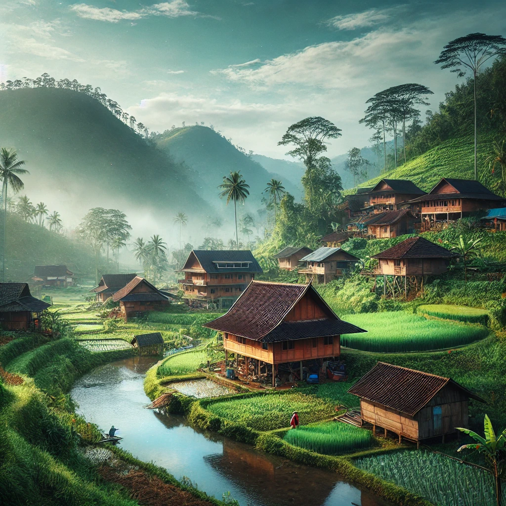
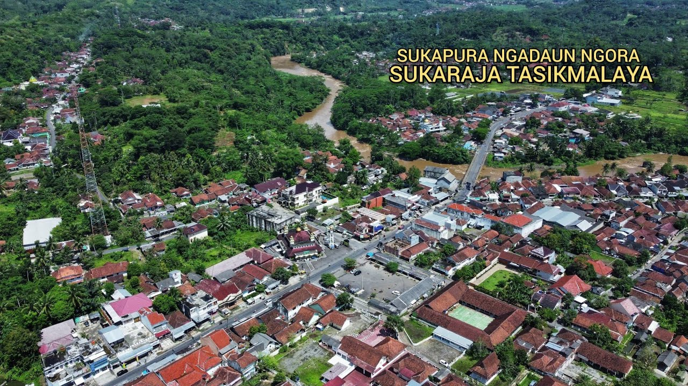

Sejarah Kampung Kedunghalang

Di tengah hamparan perbukitan hijau dan sawah yang menguning, tersembunyi sebuah kampung bernama Kedunghalang. Kampung ini terletak di Desa Tarunajaya, Kecamatan Sukaraja, Kabupaten Tasikmalaya. Dengan udara yang sejuk dan suasana yang tenang, Kedunghalang dikenal sebagai tempat yang nyaman dan damai bagi siapa saja yang berkunjung ataupun menetap di sana.
Asal-usul Nama Kedunghalang
Nama Kedunghalang berasal dari dua kata dalam bahasa Sunda, yaitu "kedung" yang berarti cekungan atau lembah, dan "halang" yang berarti penghalang atau batas. Konon, di masa lampau, kampung ini merupakan sebuah lembah subur yang diapit oleh bukit-bukit kecil yang menjadi batas alami antara wilayah desa lainnya. Keindahan alamnya menjadikan tempat ini sebagai pemukiman ideal bagi para leluhur yang mencari tempat tinggal yang aman dan subur.
Sejarah dan Perkembangan
Menurut cerita turun-temurun, Kampung Kedunghalang pertama kali dihuni oleh sekelompok keluarga petani yang bermigrasi dari daerah lain di Tasikmalaya. Mereka tertarik dengan kesuburan tanahnya yang cocok untuk bercocok tanam. Awalnya, hanya ada beberapa rumah panggung yang didirikan di antara pepohonan rindang. Seiring waktu, jumlah penduduk bertambah, dan kampung ini mulai berkembang menjadi komunitas yang harmonis.
Pada masa kolonial Belanda, Kedunghalang tetap menjadi desa yang tenang dan jarang tersentuh oleh konflik. Penduduknya hidup dari hasil pertanian, beternak, dan membuat kerajinan tangan khas Tasikmalaya. Setelah Indonesia merdeka, kampung ini mulai berkembang dengan masuknya fasilitas pendidikan, rumah ibadah, serta akses jalan yang lebih baik ke kota terdekat.
Kedunghalang Saat Ini
Saat ini, Kampung Kedunghalang tetap mempertahankan keasriannya dengan pepohonan hijau yang menaungi rumah-rumah warganya. Penduduknya hidup dengan penuh gotong royong, menjaga tradisi dan adat istiadat yang telah diwariskan oleh para leluhur. Keindahan alam dan kedamaian yang ditawarkan menjadikan kampung ini sebagai tempat yang ideal bagi mereka yang ingin melarikan diri dari hiruk-pikuk kota dan merasakan ketenangan di tengah alam.
Meski zaman terus berubah, Kedunghalang tetap berdiri sebagai kampung yang hijau, nyaman, dan damai—menjadi warisan berharga bagi generasi yang akan datang.
Geografis

Kampung Kedunghalang terletak di wilayah yang berbukit dengan ketinggian sekitar 600 meter di atas permukaan laut. Topografi daerah ini didominasi oleh lahan pertanian, sawah, serta hutan kecil yang masih terjaga keasriannya. Sungai kecil mengalir di bagian barat kampung, memberikan sumber air bagi para petani dan masyarakat setempat.
Kampung ini berbatasan dengan desa lain di sebelah utara dan timur, sementara di bagian selatan terdapat kawasan hutan lindung yang menjadi habitat berbagai flora dan fauna lokal. Iklimnya sejuk dengan suhu rata-rata berkisar antara 18 hingga 26 derajat Celsius, menjadikan Kedunghalang sebagai tempat yang nyaman untuk bermukim dan bercocok tanam.
Galery
Berikut merupakan gambar-gambar pemandangan Kecamatan Sukaraja dan Kampung Kedunghalang!
Kecamatan Sukaraja

Kecamatan Sukaraja merupakan salah satu kecamatan yang terletak di Kabupaten Tasikmalaya, Jawa Barat. Wilayah ini dikenal dengan lanskap alamnya yang indah, didominasi oleh perbukitan, persawahan, serta hutan yang masih alami. Sukaraja memiliki iklim tropis dengan suhu yang relatif sejuk, terutama di daerah yang lebih tinggi.
Masyarakat Kecamatan Sukaraja mayoritas berprofesi sebagai petani, peternak, dan pengrajin. Selain sektor pertanian, beberapa desa di kecamatan ini juga mengembangkan usaha mikro seperti pembuatan anyaman bambu dan produk kerajinan tangan khas Tasikmalaya. Infrastruktur di Sukaraja semakin berkembang dengan adanya akses jalan yang menghubungkan kecamatan ini dengan pusat kota Tasikmalaya serta daerah sekitarnya.
Secara administratif, Kecamatan Sukaraja terdiri dari beberapa desa, termasuk Desa Tarunajaya yang menaungi Kampung Kedunghalang. Desa-desa ini memiliki kehidupan sosial yang erat dengan nilai-nilai gotong royong yang masih dijunjung tinggi. Keberadaan sekolah, fasilitas kesehatan, serta pasar tradisional semakin mendukung kesejahteraan masyarakat setempat.
About Rekha
Rekha adalah singkatan dari Remaja Kedunghalang, sebuah komunitas pemuda dan pemudi yang lahir dari semangat kebersamaan, kreativitas, dan kepedulian sosial di wilayah Kedunghalang. Berawal dari kegiatan sederhana di lingkungan sekitar, Rekha kini menjadi wadah positif bagi para remaja untuk saling berbagi ide, mengembangkan bakat, dan membangun hubungan yang harmonis antarwarga.
Dengan berbagai kegiatan seperti olahraga, seni, bakti sosial, hingga pelatihan keterampilan, Rekha berkomitmen untuk membentuk generasi muda yang aktif, kreatif, dan berakhlak mulia. Kami percaya bahwa remaja bukan hanya penerus bangsa, tetapi juga motor penggerak perubahan di masyarakat.
Melalui kerja sama, rasa kekeluargaan, dan visi yang jelas, Rekha terus berusaha memberikan kontribusi nyata bagi kemajuan Kedunghalang, sambil menumbuhkan rasa bangga terhadap kampung sendiri.
Visi
Menjadi komunitas remaja yang berdaya, mandiri, dan bermanfaat bagi lingkungan.
Misi
Mendorong pengembangan potensi remaja melalui kegiatan positif.
Menumbuhkan rasa peduli terhadap lingkungan dan masyarakat.
Membangun solidaritas dan persaudaraan di antara remaja Kedunghalang.
Lokasi Kampung Kedunghalang